Filter your Portfolio
This article explains how to use the advanced Portfolio filtering interface to build and apply filters to your Portfolio.
Important
To use the filtering interface detailed in this article, your OnePlan administrator needs to enable the advanced Portfolio filtering features. See Enable Advanced Portfolio Filtering for instructions.
Note
This article does not cover how to use Legacy Filters.
Add New Filters
Click on the Filters icon
 in the Portfolio header. The filter interface will open on the right side of your window.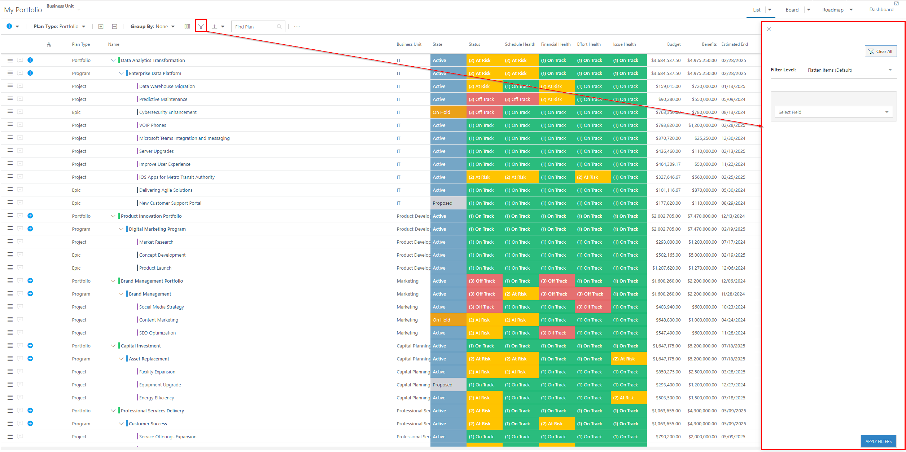
in the Portfolio header. The filter interface will open on the right side of your window.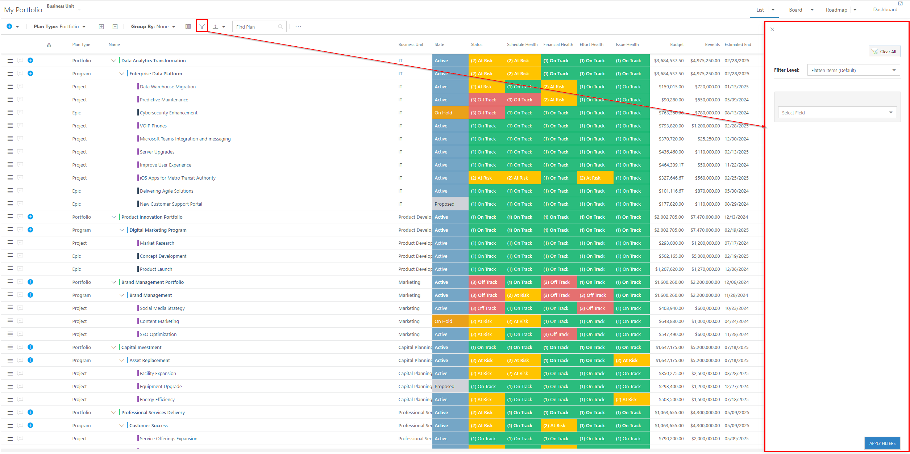Select the Filter Level. Options include:
Flatten Items (Default): This setting allows you to filter on all plan-type hierarchy levels and displays the results in a flat list view
Filter Top Level Only: This setting allows you to filter on the top plan type level selected and displays the results in a hierarchy. Lower-level plans are NOT filtered. Only top-level plans are filtered.
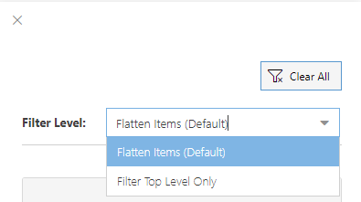Select a plan field to filter on.
Set up the filter parameters. The filter parameter fields in the filter configuration will be generated dynamically based on the field type of the plan field you selected.
Number and Currency fields: If you are filtering on a Number or Currency field, you need to select whether you want the resulting plans to have that field value less than (<), less than or equal to (<=), greater than (>), greater than or equal to (>=), or equal to (=) the set value. Then enter in the value you want to filter your plans on.
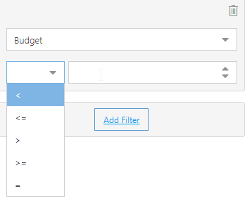Note
For example, I could set up a filter to view plans that all have a Budget greater than or equal to $500,000. That filter would look like this:
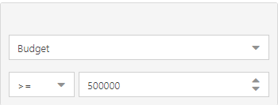Choice and Multi-Choice fields: If you are filtering on a Choice or Multi-Choice field, select the choice value(s) you want to filter your plans on.
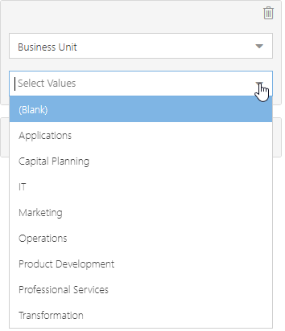Note
For example, I could set up a filter to view plans that belong to the IT and Operations Business Units. That filter would look like this:
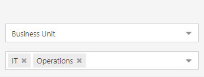Date fields: If you are filtering on a Date field, select the date range you would like to filter on. You can select whether you want to filter plans that have a date value before a set date or after a set date. You can also check the Today check box to filter plans either before or after the current date.
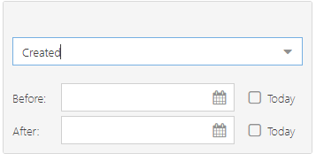Note
For example, I could create a filter to view plans that were created before April 1, 2024. That filter would look like this:
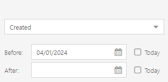User fields: If you are filtering on a User field, select the User you would like to filter on. You can also check the Me check box to filter for plans where you are the user for the selected field.
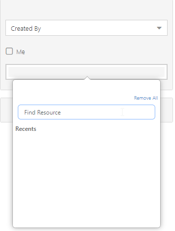Note
For example, I could set up a filter to view plans that were created by Erlich Bachman. That filter would look like this:
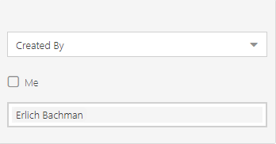Yes/No fields: If you are filtering on a Yes/No field, select whether you want to see plans where the selected field value is Yes or No.
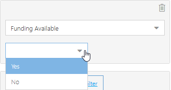Note
For example, I could set up a filter to view plans where Funding Available equals Yes. That filter would look like this:
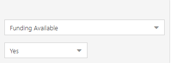Text fields: If you are filtering on a Text field, enter the text value you would like to filter on.
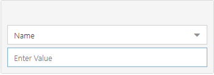Note
For example, I could set up a filter to view plans that have Names including the word "improve". That filter would look like this:
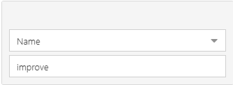
You can set up multiple filters. Click Add Filter to add another filter to the Portfolio.
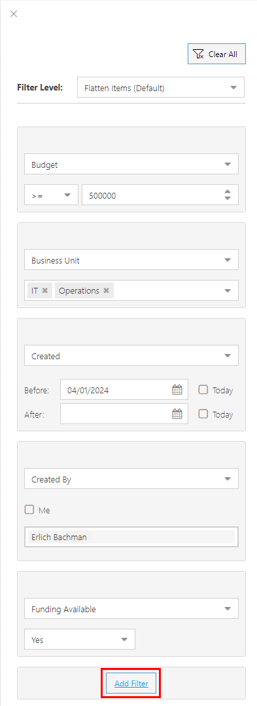Once you have all the filters you want, click Apply Filters to apply your filters to the Portfolio view.
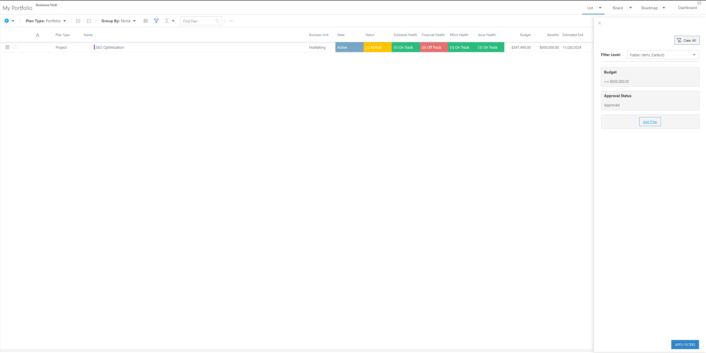
Remove Filters
To remove a single filter, click the Delete icon next to the desired filter.
To remove all filters, click Clear All.